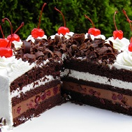

Sastojci torte
- Čokolada
- Kokos
- Višnja
- Jaja
- Brašno
- Pecivo
SCHWARZWALD TORTA
CIJENA: 2700.00 RSD
Mnogo je torti od višanja, ali samo je jedna ona iz – Schwarzwalda. Njezina su posebnost upravo višnje koje rastu u toj njemačkoj pokrajini, ali i starinski postupak pripreme čokoladnog biskvita, bogate kreme i višanja sa želatinom.
Schwarzwald torta je ukusna kombinacija slatke pavlake, čokolade I višnje. To je zapravo više bijela torta iako njen naziv na njemačkom jeziku znači Crna šuma. Schwarzwald predstavlja planinski masiv u Njemačkoj u kome izvire Rijeka Dunav. Recept za Schwarzwald tortu je omiljen kod njemačkih domaćica, ali I u našim krajevima jer je veoma ukusna kombinacija mliječne pavlake, čokolade I višanja.